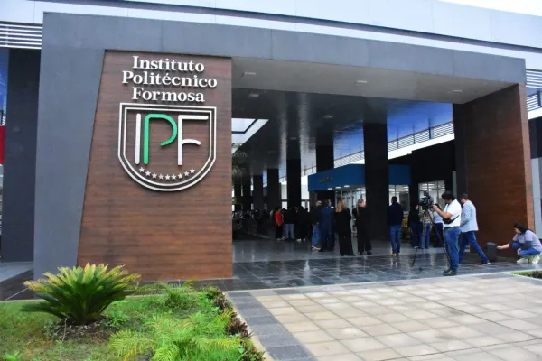
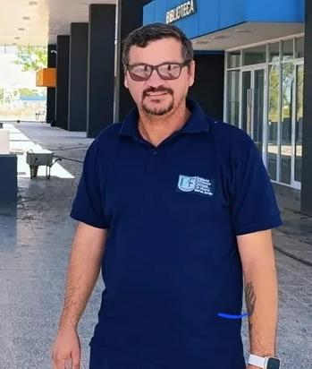
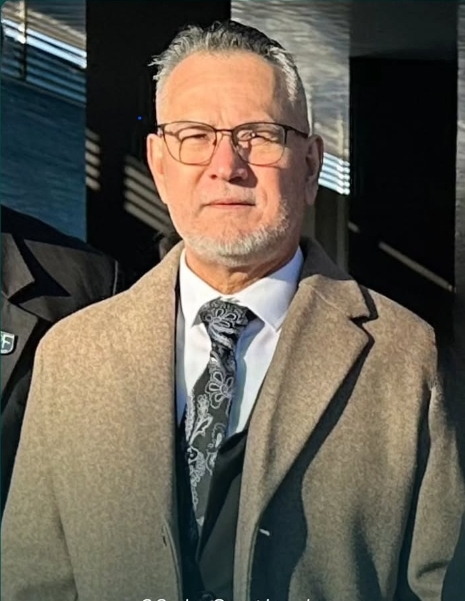
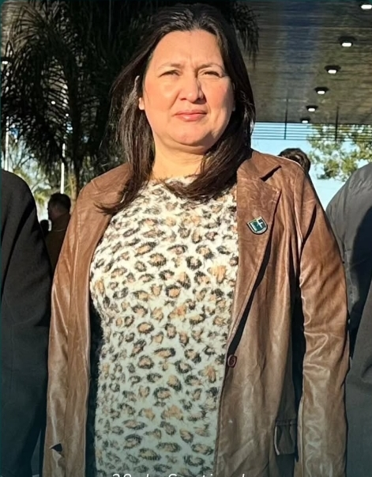
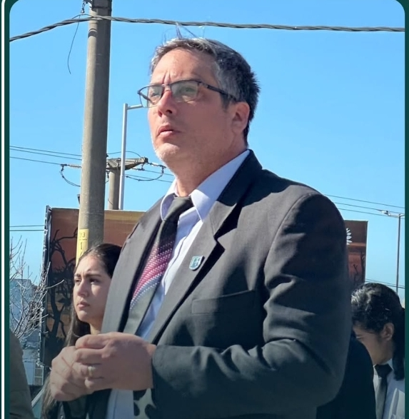
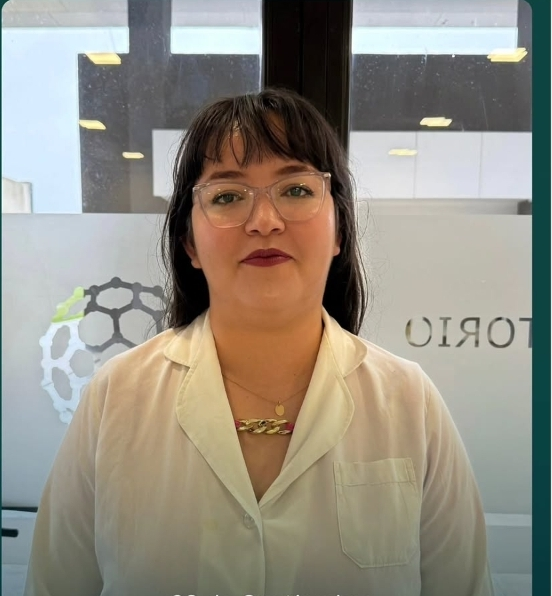

El Instituto Politécnico Formosa (IPF) "Dr. Alberto Marcelo Zorrilla" fue creado oficialmente mediante el decreto provincial N° 18/2018 del 31 de enero de 2018, con el objetivo de formar técnicos superiores en áreas de alta tecnología para impulsar el desarrollo productivo local. Su origen se remonta a julio de 2013, cuando se comenzó a planificar un Polo Científico, Tecnológico y de Innovación (PCTI) en la provincia, diseñando trayectos formativos que articularan teoría y práctica. Las clases de la primera tecnicatura, Mecatrónica, se iniciaron el 19 de marzo de 2018 en las instalaciones de la EPET N° 1, con una matrícula inicial de 40 alumnos. La institución funcionó inicialmente en la EPET 1 y la EPET 10, y posteriormente utilizó espacios del Polo Científico, hasta que el 26 de junio de 2025 se inauguró su propio edificio sede en la Ruta Nacional N° 81, kilómetro 1190. El IPF ofrece actualmente cuatro tecnicaturas superiores: Mecatrónica, Desarrollo de Software Multiplataforma, Química Industrial y Telecomunicaciones. La institución lleva el nombre en honor al Dr. Alberto Marcelo Zorrilla, exministro de Cultura y Educación de Formosa que falleció en 2021, reconocido por su defensa de la educación pública.
Brindar educación técnica superior de calidad, promoviendo la formación integral de los estudiantes mediante la articulación entre el conocimiento teórico y la práctica profesional, contribuyendo al desarrollo productivo y tecnológico de la región.
Ser una institución de referencia en la formación técnica, reconocida por su excelencia académica, innovación educativa y vinculación con el sector productivo, formando profesionales comprometidos con el desarrollo sostenible.
Responsable de la gestión institucional y el desarrollo académico del Instituto Politécnico Formosa.

Encargada de coordinar y supervisar el desarrollo curricular de todas las carreras del instituto.
Lidera la formación de técnicos especializados en programación y desarrollo de aplicaciones multiplataforma.

Dirige la carrera orientada a redes, sistemas de comunicación y tecnologías de transmisión de datos.

Conduce la carrera que integra mecánica, electrónica e informática para la automatización industrial.

Guía la formación de técnicos en procesos químicos, laboratorio y gestión de la producción industrial.
